A videojátékok műfajai: Fedezd fel a játékvilág típusait

Kalandjátékok
A kalandjátékok a történetre, a felfedezésre, a rejtvényfejtésre és a készletkezelésre helyezik a hangsúlyt a cselekvés helyett. A játékosok saját tempójukban tárják fel a narratívát a point-and-click felületeken vagy a 3D-s világokon keresztül. A rejtvények próbára teszik a játékosok logikáját és készletkezelési képességeit.
| Népszerű alműfajok |
|---|
| Mutass és kattints: |
| Rejtvény- és történetvezérelt játékok mutass és kattints felülettel. |
| Példák: Monkey Island, Grim Fandango |
| Vizuális regények: |
| Szöveg- és narratívaközpontú kalandok minimális játékmenettel. |
| Példák: Doki Doki Irodalmi Klub, Ace Attorney |
| Interaktív film: |
| Korlátozott interakció videolejátszás közben. |
| Példák: Late Shift, The Bunker |
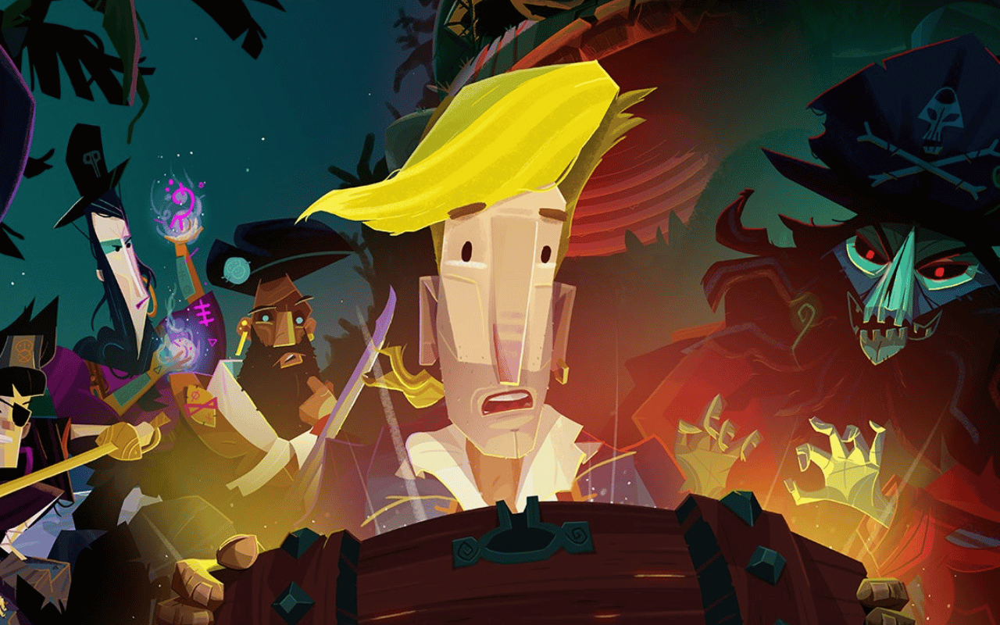
Akciójátékok
Az akciójátékok tesztelik és jutalmazzák a játékosok reflexeit, szem-kéz koordinációját és reakcióidejét. A játékmenet pörgős, a harcra, a robbanásokra és az epikus pillanatokra összpontosítva. A népszerű alműfajok közé tartoznak a lövöldözős játékok, a verekedős játékok, a hack and slash és még sok más.
| Népszerű alműfajok |
|---|
| Shooters: |
| Első és harmadik személyű lövöldözés ellenségekre. |
| Pl.: Doom, Gears of War |
| Harci játékok: |
| Fej-fej elleni harcok kombinált rendszerekkel. |
| Pl.: Street Fighter, Mortal Kombat |
| Hack and Slash: |
| Közelharc ellenségrajok ellen. |
| Pl.: God of War, Dynasty Warriors |

Sportjátékok
A sportjátékok segítségével a játékosok virtuálisan a pályán és menedzserként is megtapasztalhatják kedvenc sportjaikat. Az irányítás és a szabályok a professzionális sporteseményeket tükrözik különböző fokú realizmussal. Az irányítási módok lehetővé teszik a franchise bajnokságokba vezetését is. Ez a játékműfaj mindig is trend a videojáték-iparban .
| Népszerű alműfajok |
|---|
| Szimuláció:: |
| A valósághű fizika és a vezérlőelemek célja az autentikus játékmenet rögzítése. |
| Pl.: FIFA, NBA 2K |
| Arcade: |
| Egyszerűsített felvételi és játékélmények a szórakozásra összpontosítva. |
| Pl.: NBA Jam, NFL Blitz |
| Menedzsment: |
| Alkosson csapatokat szakmák, tervezetek és képzések révén. |
| Pl.: Football Manager, OOTP Baseball |
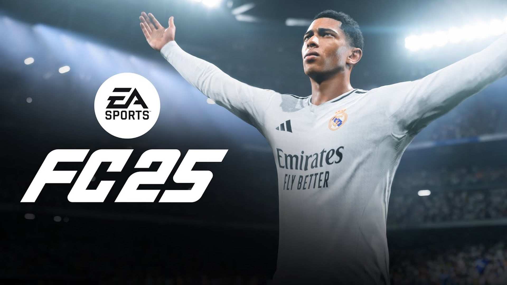
Szimulációs játékok
A szimulációk megismétlik a valós tevékenységeket, a járművek pilótájától az üzletvezetésig. Egyesek a teljes realizmust célozzák, míg mások a játékművészeti szolgáltatások művészi engedélyét veszik igénybe a szórakozás és a hozzáférhetőség kedvéért. A menedzsment, az építőipar, a sport és a járművek gyakori témák.
| Népszerű alműfajok |
|---|
| Flight Sims: |
| Repülőgépek vezetése autentikus arcade repülési modellekben. |
| Pl.: Microsoft Flight Sim, Ace Combat |
| Vállalkozás/város: |
| Vállalkozások, városok, parkok stb. építése és kezelése. |
| Pl. SimCity, Restaurant Empire |
| Járművezetés: |
| Autók, teherautók és vonatok vezetése valósághű környezetben. |
| Pl.: Euro Truck Simulator, Forza Horizon |
| Life Sims: |
| karakterek létrehozása és a mindennapi élet irányítása. |
| Pl.: The Sims, Animal Crossing |

Platformjátékok
A platformerek kétdimenziós, oldalsó görgetős játékok, amelyek kihívást jelentenek a játékosoknak a veszélyes pályákon való futásra, ugrásra és mászásra. A veszélyeket és az ellenségeket pontos időzítéssel és ügyességgel kell leküzdeni. A platformok uralták a korai játékokat, és ma is népszerűek.
| Népszerű alműfajok |
|---|
| Hagyományos 2D: |
| Oldalra gördülő akadálypályák. |
| Pl.: Super Mario Bros, Sonic the Hedgehog |
| Puzzle Platformer: |
| Rejtvénymechanikával integrált platformozás. |
| Pl.: Limbo, Inside |
| Run and Gun: |
| Shooter elemek hozzáadva a platformhoz. |
| Pl.: Contra, Metal Slug |

Szerepjátékok (RPG-k)
Az RPG-k során a játékosok egyedi képességekkel, tárgyakkal és képességekkel testreszabhatják a karaktereket. A felfedezés, a küldetések és a melléktevékenységek révén gazdag történetek bontakoznak ki. A Combat ötvözi a stratégiai pártirányítást cselekvési, körökre osztott vagy taktikai rendszerekkel.
| Népszerű alműfajok |
|---|
| Akció-RPG: |
| A valós idejű harc a játékos képességeit hangsúlyozza. |
| Pl.: Diablo, Path of Exile |
| Japán RPG: |
| Körökre osztott rendszerek, amelyeket a klasszikus RPG-k ihlettek. |
| Pl.: Final Fantasy, Dragon Quest |
| Open World RPG: |
| Hatalmas 3D-s világok felfedezése a küldetés szabadságával. |
| Pl.: Skyrim, The Witcher |
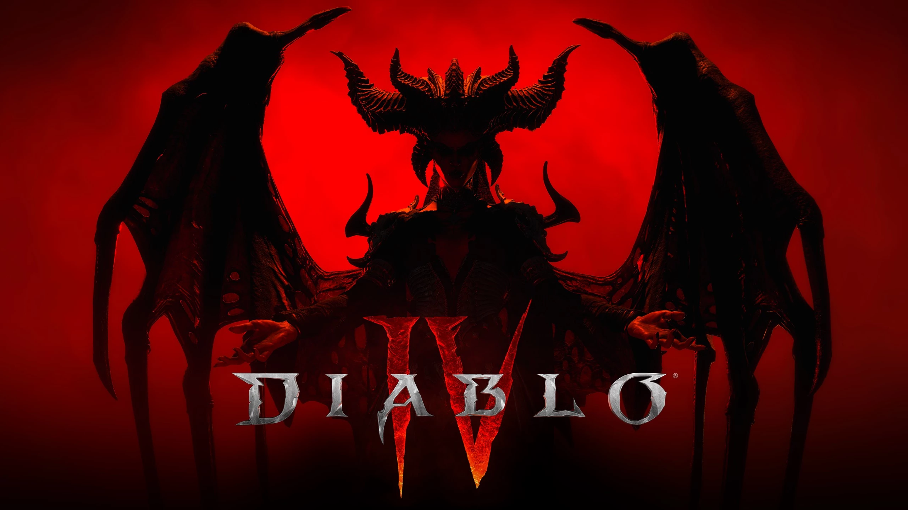
First Person Shooters
Az első személyű lövöldözős játékok (FPS) a fegyveres harcot a főszereplő vizuális szemszögéből mutatják be. A gyors reflexek kulcsfontosságúak a célzásban, a mozgásban és a fegyverváltásban őrjöngő tűzharcokban. Az FPS játékok ma a többszereplős játék pillérei.
| Népszerű alműfajok |
|---|
| Katonai FPS: |
| Harcolj valódi háborúk által ihletett hatalmas térképeken. |
| Pl.: Call of Duty, Battlefield |
| Hero FPS: |
| Sci-fi és fantasy beállítások erőteljes játékos karakterekkel. |
| Pl.: Doom, Overwatch |
| Magával ragadó simek: |
| Környezeti interakció és feltörekvő játékmenet. |
| Pl.: BioShock, Dishonored |
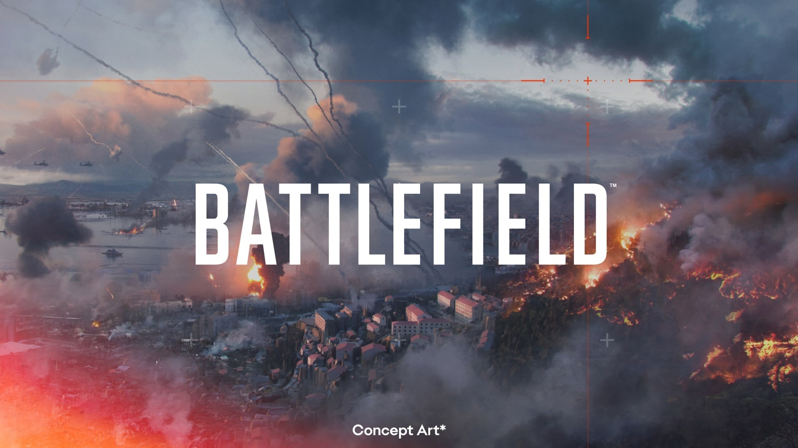
Akció-kalandjátékok
Az akció-kalandjátékok a harcot, az akciósorozatokat és a felfedezést rejtvényfejtéssel vegyítik. A környezet bátorítja a felfedezést, és gyakran rejteget titkokat a kíváncsi játékosok számára. Az akció-kaland változatos, mindenre kiterjedő műfajt kínál.
| Népszerű alműfajok |
|---|
| Filmes akció-kaland: |
| Erősen forgatókönyvezett, gyors eseményvezérelt élmények. |
| Pl.: Uncharted, The Last of Us |
| Akció-RPG: |
| Szerepjáték fejlődés és zsákmány valós idejű harccal. |
| Pl.: Batman: Arkham sorozat, Horizon Zero Dawn |
| Open World Action Adventure: |
| Hatalmas sandbox világok. |
| Pl.: Assassin's Creed, Legend of Zelda: Breath of the Wild |

Harci játékok
A verekedős játékok közelharcban állítják egymással szembe a játékosokat. A játékosok kombókat, speciális mozdulatokat, térközöket és pszichológiát alkalmaznak, hogy felülmúlják a versenyt. A gyors reakciókat és a mozdulatok és a párosítások mély ismeretét jutalmazzák.
| Népszerű alműfajok |
|---|
| 2D Fighters: |
| Két harcos egy 2D repülőgépre korlátozva. |
| Pl.: Street Fighter, Mortal Kombat |
| 3D Fighters: |
| Harcosok, akik szabadon küzdenek egy 3D arénában. |
| Pl.: Tekken, Soulcalibur |
| Platform Fighters: |
| harcol a dinamikus szakaszok között platformozással. |
| Pl.: Super Smash Bros |
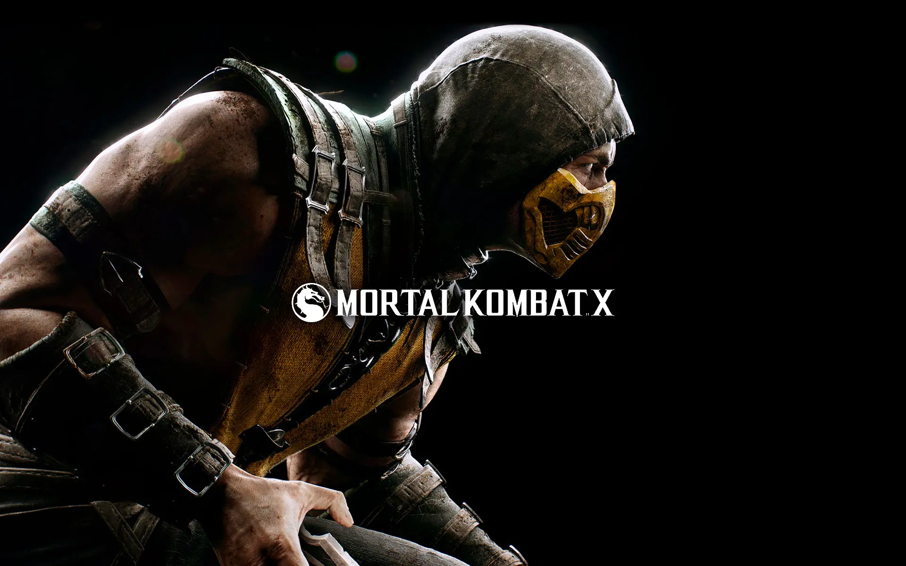
Valós idejű stratégiai (RTS) játékok
Az RTS játékok a játékosokat erőforrás-gyűjtéssel, hadseregek építésével és az ellenfelek leküzdésével bízzák meg valós időben, fordulók nélkül. Egyensúlyozza a gazdasági fejlődést a csapatok irányításával szárazföldi, tengeri és légi csatákban.
| Népszerű alműfajok |
|---|
| Hagyományos RTS: |
| Bázisépület és egységvezérlés. |
| Pl.: Starcraft, Command & Conquer |
| MOBA: |
| Játékosokból álló csapatok, amelyek mindegyike egyetlen erős hőst irányít. |
| Pl.: League of Legends, Dota 2 |
| Tower Defense: |
| Védelem építése a haladó ellenséges hullámok elpusztítására. |
| Pl.: Plants vs Zombies, Bloons TD |
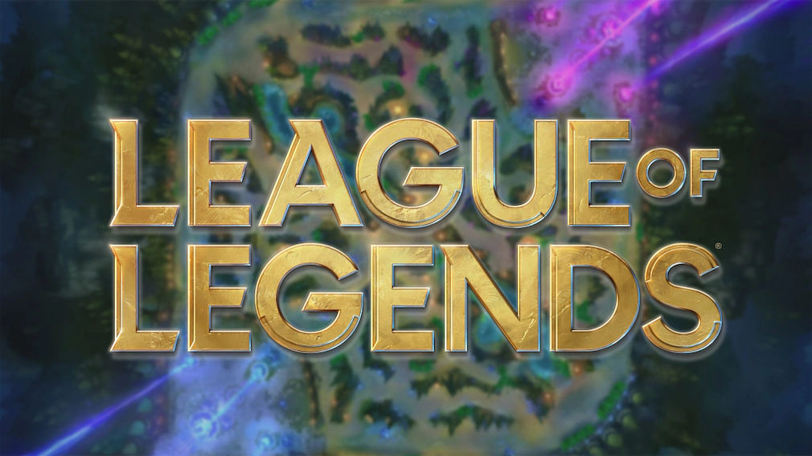
Versenyjátékok
A versenyjátékok lehetővé teszik a játékosok számára, hogy nagy teljesítményű autókkal, kerékpárokkal és egyéb járművekkel száguldjanak végig a pályákon és pályákon. A verseny a valósághű szimulációktól a falon kívüli arcade élményekig terjed. A többjátékos és a kompetitív játék erősen jellemző.
.jpg)
| Népszerű alműfajok |
|---|
| Szimuláció: |
| Reális vezetési fizika és élethű kezelhetőség. |
| Pl.: Gran Turismo, Forza Motorsport |
| Arcade: |
| Izgalmas sebesség és mutatványok a realizmus felett. |
| Pl.: Need for Speed, Mario Kart |
| Futurisztikus: |
| Jövőbeli és sci-fi járművek és beállítások. |
| Pl.: F-Zero, Wipeout |
Shooter Games
A lövöldözős játék minden olyan játékot felölel, ahol a lövöldözős fegyverek állnak a középpontban. A precíz FPS-játékokkal ellentétben a lövöldözős címke a játékmenet és a fegyvereket tartalmazó játékstílusok széles skálájára alkalmazható.
| Népszerű alműfajok |
|---|
| Fuss és fegyver: |
| 2D oldalsó görgetéses lövöldözés. |
| Pl.: Contra, Metal Slug |
| Bullet Hell: |
| eszeveszett kikerülése elsöprő golyóminták elől. |
| Pl.: Touhou Project |
| Third-Person Shooter: |
| Lövés a karakter mögül. |
| Pl.: Gears of War, Uncharted |
| Looter Shooter: |
| RPG zsákmány- és progressziós rendszerek. |
| Pl.: Borderlands, Destiny |
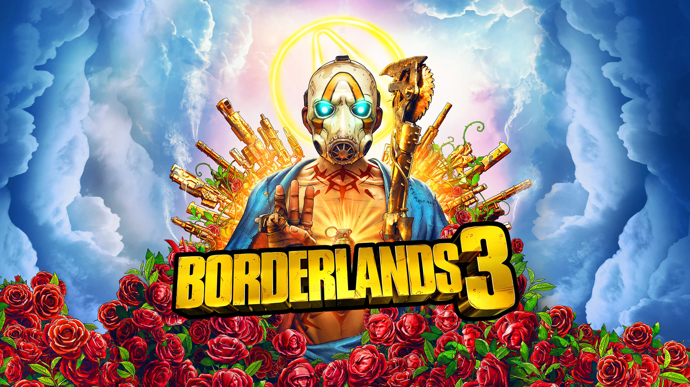
Puzzle Játékok
A kirakós játékok kihívást jelentenek a játékosok logikájában, mintafelismerésében és problémamegoldó készségeiben. A rejtvények befejezése és a játékmenet rejtélyeinek megfejtése intenzív elégedettséget jelent. A népszerű alműfajok közé tartozik a fizika, a rejtett tárgyak és a hozzáillő rejtvények.

| Népszerű alműfajok |
|---|
| Fizikai rejtvények: |
| Mechanikai és fizikai alapú rejtvények. |
| Pl.: Portál, Half-Life 2 |
| Egyező rejtvények: |
| Hozzáillő lapkák vagy játékdarabok. |
| Pl.: Candy Crush, Bejeweled |
| Logikai rejtvények: |
| Deduktív érvelés és kritikai gondolkodás. |
| Pl.: Baba Is You, The Witness |
Alkalmi játékok
Az alkalmi játékok egyszerű szabályokkal és a tömegpiaci vonzerőhöz szabott játékmenettel rendelkeznek. A különböző hátterű játékosok könnyedén felvehetik őket, és ügyességüktől függetlenül előrehaladhatnak. A rövid játékmenetek a mobil életmódot szolgálják.
| Népszerű alműfajok |
|---|
| Match 3: |
| A csempék illesztése egy rácson a pontokért. |
| Pl.: Candy Crush, Bejeweled |
| Hidden Object: |
| A forgalmas jelenetekben elrejtett objektumok listájának megkeresése. |
| Pl.: Hidden City, Hidden Through Time |
| Hyper Casual: |
| Rendkívül egyszerű, mobilra összpontosító játékok. |
| Pl.: Fruit Ninja, Flappy Bird |
.jpg)
Stratégiai játékok
A stratégiai játékok az átgondolt tervezést, az erőforrás-gazdálkodást és a nagyszabású döntéshozatalt helyezik előtérbe a kézügyesség vagy a reflexek helyett. Jutalmazzák az elemzést, a kreatív problémamegoldást és a hosszú távú stratégiai jövőképet.
| Népszerű alműfajok |
|---|
| 4X: |
| eXplore, eXpand, eXploit, eXterminate. |
| Pl.: Civilizáció, Endless Space |
| Valós idejű taktika: |
| Valós idejű összecsapások kis csapatokkal. |
| Pl.: Company of Heroes, Tooth and Tail |
| Nagy stratégia: |
| A nemzetek irányítása globális szinten. |
| Pl.: Europa Universalis IV, Crusader Kings 3 |

Massively Multiplayer Online RPG (MMORPG)
Az MMORPG-k lehetővé teszik játékosok ezrei számára, hogy egyszerre éljenek együtt a kiterjedt, nyitott fantáziavilágban online. A játékosok személyre szabják a karaktereket, és összefognak küldetésben, kazamatákban támadnak, és hatalmas PvP-csatákban vesznek részt.
| Népszerű alműfajok |
|---|
| Fantasy MMORPG-k: |
| Kardok és varázslatos beállítások. |
| Pl.: World of Warcraft, Final Fantasy XIV |
| Sandbox MMORPG-k: |
| Nyílt végű játékmenet és mechanika. |
| Pl.: EVE Online, Ultima Online |
| Akcióharc: |
| Valós idejű, képesség alapú csaták. |
| Pl.: Guild Wars 2, Black Desert Online |
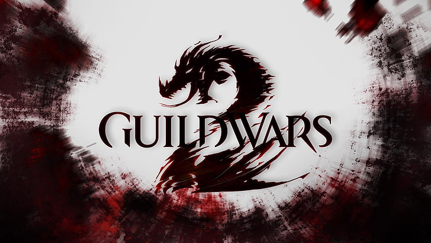
Lopakodó játékok
A lopakodó játékok kihívást jelentenek a játékosoknak, hogy elkerüljék az észlelést, és fedezéket használva beszivárogjanak a helyszínekre és elkerüljék az ellenséget. Az árnyékokba bújva és az útvonalak megtervezése során úgy érzi magát, mint egy ragadozó, aki zsákmányt üldöz.
| Népszerű alműfajok |
|---|
| Taktikai kémkedés: |
| Módszeresen beszivárog a bázisokra. |
| Pl.: Metal Gear Solid, Splinter Cell |
| Immersive sim: |
| Nagyobb játékokba szőtt, feltörekvő lopakodás. |
| Pl.: Dishonored, Deus Ex |
| Stealth Horror: |
| Természetfeletti ellenségek elkerülése. |
| Pl.: Alien Isolation, Amnesia: The Dark Descent |
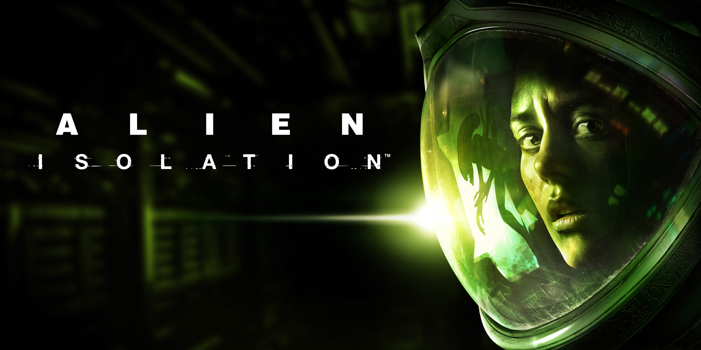
Party Games
A társasjátékok kötetlen, társasági szórakozást nyújtanak a csoportok számára, hogy személyesen játszhassanak együtt. Egyszerű, intuitív kezelőszervekkel és mechanikával rendelkeznek, amelyeket bárki könnyen felvehet. A közös nevetés gyakran ugyanolyan fontos, mint a győzelem.
| Népszerű alműfajok |
|---|
| Tábla- és kártyajátékok: |
| klasszikus asztali partijátékok digitális adaptációi. |
| Pl.: Monopoly, Scrabble |
| Trivia Games: |
| Gyors tempójú általános ismeretek trivia. |
| Pl.: You Don't Know Jack, Trivia Murder Party |
| Tevékenységi játékok: |
| Rendhagyó minijátékok és promptok. |
| Pl.: WarioWare, Jackbox Party Pack |
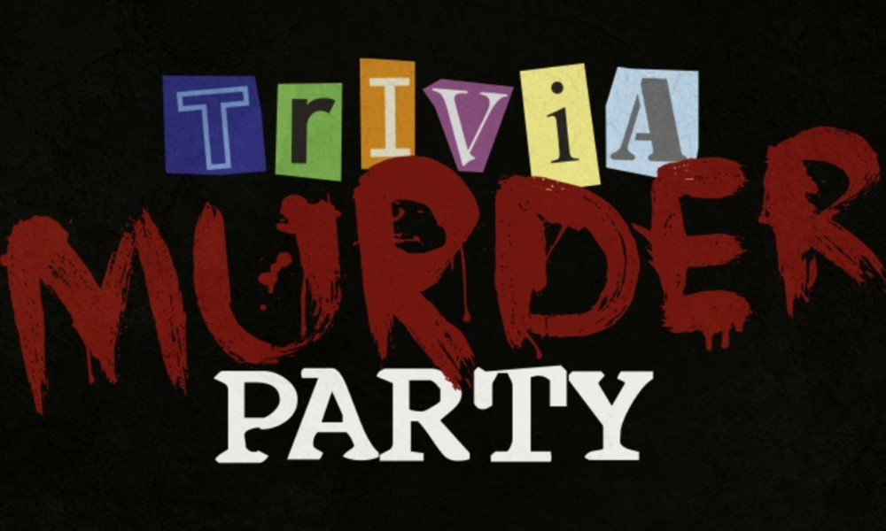
Akció RPG-k
Az akció-RPG-k a játékos jártasságot igénylő, valós idejű harcokat tartalmazzák az RPG szintező és zsákmányrendszerekbe. A küzdelem a körökre osztott menük helyett a helymeghatározáson, az elkerülésen, az időzítésen és a célzáson alapul. Diablo népszerűsítette a műfajt.
| Népszerű alműfajok |
|---|
| Looter Shooters: |
| FPS és TPS játékok RPG felszereléssel. |
| Pl.: Borderlands, Destiny |
| Soulslikes: |
| Rendkívüli kihívásokkal teli, harmadik személyű közelharc. |
| Pl.: Dark Souls, Bloodborne |
| Izometrikus: |
| felülről lefelé néző nézet a taktikai pozicionáláshoz. |
| Pl.: Path of Exile, Grim Dawn |
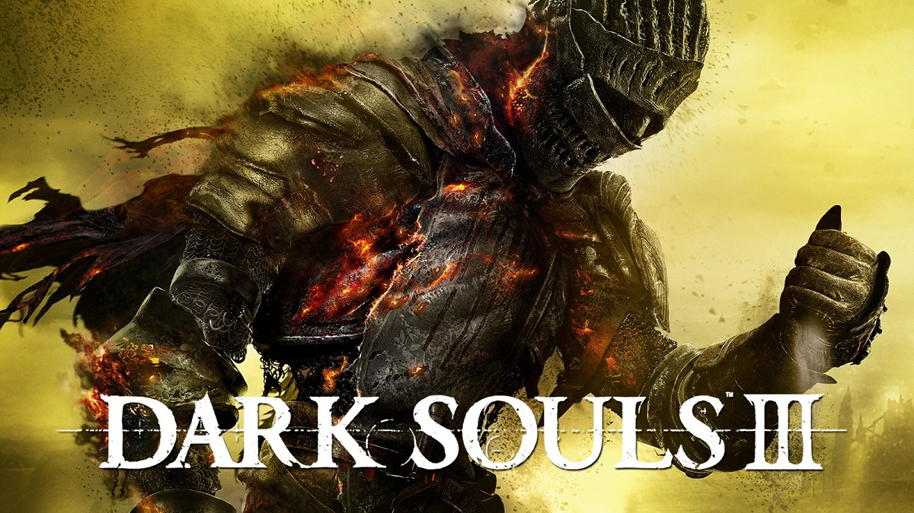
Taktikai RPG-k
A taktikai RPG-k körökre osztott küzdelmet tartalmaznak a rácsokon, ami lehetővé teszi az egységek pontos irányítását. A kihívások leküzdéséhez gondos pozicionálásra és stratégiára van szükség. A testreszabás mélységet ad az erők építésekor.
| Népszerű alműfajok |
|---|
| Japán TRPG-k: |
| Anime stílusú grafikák és történetek. |
| Pl.: Final Fantasy Tactics, Fire Emblem |
| Strategy-JRPG hibridek: |
| játékrendszerek keveréke. |
| Pl.: XCOM, Mario + Rabbids Kingdom Battle |

Túlélő játékok
A túlélési játékok arra késztetik a játékosokat, hogy az éhség, a szomjúság és egyéb szükségletek kezelésével eligazodjanak a zord környezetekben és forgatókönyvekben. A túlélési mechanika elmeríti a játékosokat a létezés alapjaiban.
| Népszerű alműfajok |
|---|
| Survival Sandbox: |
| Nyitott világok a felfedezésre. |
| Pl.: Minecraft, Valheim |
| Survival Horror: |
| Túlélni és menekülni a rémálmokból. |
| Pl.: The Forest, The Long Dark |
| Túlélési szimuláció: |
| Reális túlélési mechanika. |
| Pl.: SCUM, This War of Mine |

Battle Royale játékok
A Battle Royale játékok nagyszámú játékost mérnek egymás ellen egy utolsó ember elleni halálmeccsen. A játékosok fegyvereket keresnek egy szűkülő játékzónában, hogy az utolsó túlélővé váljanak. A Fortnite népszerűsítette a műfajt.
| Népszerű alműfajok |
|---|
| Hero Shooters: |
| Pl.: Fortnite, Apex Legends |
| Katonai lövöldözős játékok: |
| Pl.: PUBG, Call of Duty Warzone |